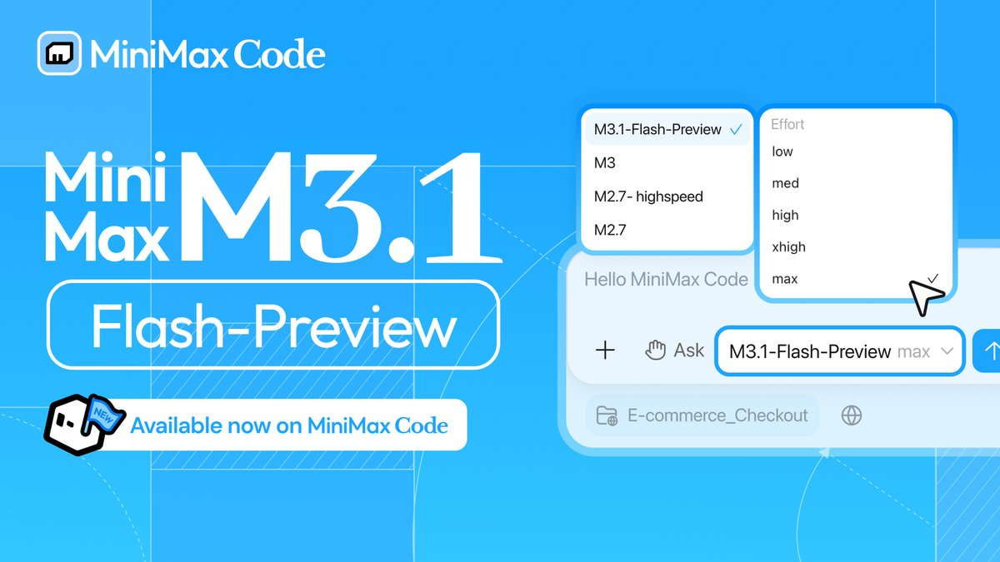
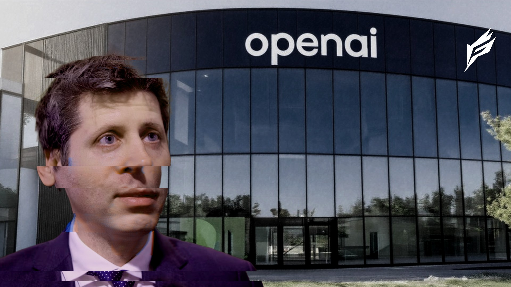
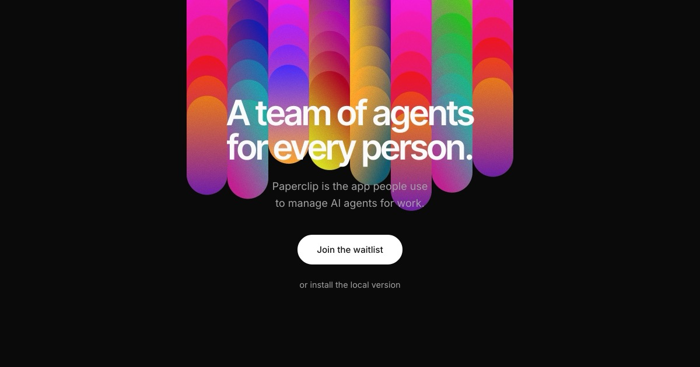
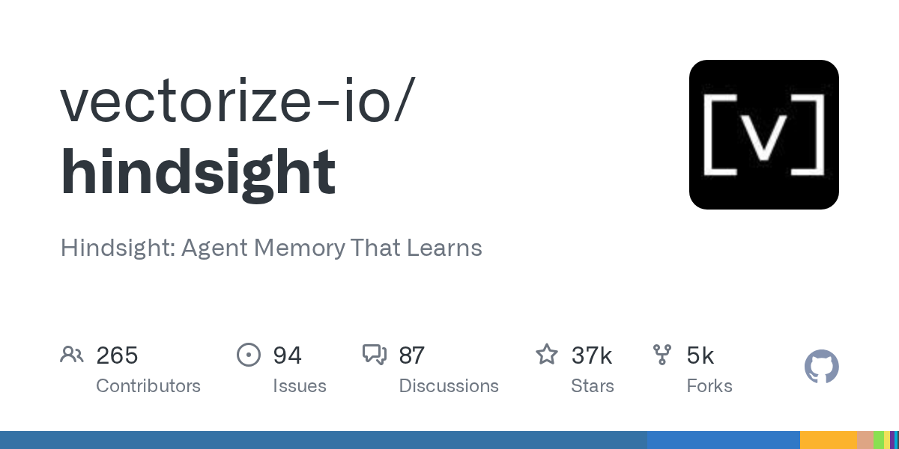

AI Intelligence Daily · 2026-09-28
专栏一｜新闻
1. MiniMax-M3.1-Flash-Preview 登陆 MiniMax Code + Token Plan
事实
MiniMax 宣布文本/多模态 Coding 模型 MiniMax-M3.1-Flash-Preview 可在 MiniMax Code 与 Token Plan 使用。官方 API 文档写明「暂时仅通过 Token Plan 和 MiniMax Code 提供」，并描述为 Frontier multimodal coding、1M context、可调 thinking depth。@MiniMaxAgent 于 2026-09-27T05:24:55Z 发帖；文档 dateModified=2026-09-27T14:35:53Z；@MiniMax_AI 于 2026-09-27T17:06:37Z 宣布 Token Plan 可用。重要钉： npm @minimax-ai/code 仍 0.5.5，Desktop 仍 0.1.188——这是模型档进既有产品，不是客户端发版。营销站 /news 首页仍未见 M3.1 标题卡，以 API docs + 官方 X 为准。
判断
对 AI Coding / Harness：新档位直接进可测渠道。快讯阶段曾因官网/版本未回钉记 near；本轮有可持续文档 URL + docs 时间钉 + Token Plan 官宣，才升格 ≥B，且仍不作强 A Desktop。

2. 一线厂 Desktop / Work Agent：本窗无 ≥B shipping
事实
Pins 未变：Cursor Sep23 · Claude Code 2.1.283 · Muse/Charm · MCP 2026-07-28 · 小艺 0.7.2 · Kimi 1.0.3/Ext 2.0.22 · ZCode 3.14.3 · MiniMax npm 0.5.5/Desktop 0.1.188 · Qoder Desktop 锚 0.3.3@09-18（Flash→09-30；SOTA 截止后仍无结果官宣）· DeepSeek harness 无官网 Desktop CTA（download rc.2 Last-Mod 仍 09-24；npm latest overnight 重钉 0.1.7-rc.2，无 CTA → near）。Sep27 快讯全日 SILENT。
判断
负结果有信息量——勿用社区热度或模型 Preview 填补 Desktop 空窗。
专栏二｜话题热议
1. Authors Guild 解封简报 × OpenAI/Microsoft
事实
Authors Guild 新闻稿称解封文件显示 OpenAI/Microsoft 高管知悉大规模图书盗版训练风险仍推进。HN 讨论 600p / 575c（相对 23:13 快讯 ≈525p 续涨）。文件披露本身约 Sep 21 量级——本窗新增的是社区爆发讨论，不是新产品 ship。
判断
训练数据治理与产业合规舆论升温。与双主线弱直接，但对采购/合规侧叙事有外溢。

2. 「There are no rogue AI agents」——问责叙事反驳
事实
Eoin Higgins 一文反对把越界行为拟人化为「rogue agents」，称该框架便于厂商卸责，主张回到公司控制与责任。HN 324p / 240c。与昨报 OpenAI Sep25 官方更新、BBC 政府站点续链、UNCTAD 出站叙事同链，但是新讨论框架，非官方 incident。
判断
对 Trust：「谁负责」比「agent 变坏了」更可产品化——egress allowlist、委托边界、审计与上报才是工程抓手。

脚注 · 续热不升格
DeepSeek DSec ≈315p/104c（昨主条热度 UPDATE）；BBC×OpenAI ≈127p/191c；UNCTAD ≈83p/83c；Codex「826 子 Agent / ~$78k」≈80p/31c（仍无官方确认）；Ember-1 ≈315p/168c（博文 09-23，模型雷达脚注）。
专栏三｜开源雷达
1. paperclipai/paperclip ★≈89.8k（≈+2.5k）· Trending #1
「管理工作中 agents 的开源应用」。续暴涨占 Trending #1；release 仍 v2026.916.1，无新 tag。建议扫 governance / 多 Agent 组织模型；对照 orca ADE。

2. vectorize-io/hindsight ★≈37.2k（≈+5.1k）· Trending #2
Agent Memory That Learns。今日 stars today 增量高于 paperclip；仍 v0.10.1。建议读写入/检索接口后再 PoC。

3. stablyai/orca ★≈79.6k · NEW 观察 · v1.4.215@09-27
ADE（Agent Development Environment）：用自有订阅并行跑多 coding agent；desktop / mobile / remote runtime。窗内有 agent-launch / agent-trust 相关修复。建议列入 watchlist；对照 Cloud Agent 多会话、并行闸门与 trust 写入边界。

4. google/ax ★≈12.2k（≈+249）· 仍 v0.3.1
无新 tag；窗内 fix(substrate): revert crashed actors instead of recreating。作 watchlist 小步 UPDATE（actor 崩溃恢复）。
重点事件新进展
- OpenAI misalignment：Authors Guild +「no rogue agents」话语 UPDATE；官方一手页无新实质段落。
- MiniMax Code：M3.1-Flash-Preview 文档 + Code/Token Plan 渠道确认（模型档 NEW；客户端 pin 否）。
- DeepSeek：npm latest→0.1.7-rc.2（near）；CDN/官网 CTA 仍无；DSec HN≈315p 续热。
- Qoder SOTA：截止后仍无结果官宣；Flash→09-30。
- 开源：paperclip/hindsight 再涨；ax crash-revert；orca 新入观察。
- 未变钉：Claude Code 2.1.283 · MiniMax 0.5.5/0.1.188 · 小艺 0.7.2 · Kimi/ZCode · MCP 2026-07-28 · Copilot Default Enablement→Oct 22。
今天正在形成的趋势
- 模型档与客户端发版继续解耦（M3.1 进渠道，Desktop/CLI 数字不动）。
- Agent 话语从「失控」转向「问责」——工程对应委托、审计与 egress。
- 版权/训练数据诉讼舆论与安全出站叙事并行。
- 开源编排/Memory 仓继续吸血，ADE 品类（orca）补位。
对智能体互联网
- 「没有 rogue agent」作为产品叙事约束——指向控制方责任与可审计委托。
- 出站与训练数据合规是两条并行压力——协议需预留 egress 策略与数据来源审计钩子。
对 Work / Agent 引擎
- 模型档热更新 vs 客户端冷更新——Runtime 应能在不升 Desktop 时切换/门控模型档与配额。
- 并行 ADE（orca）对照：多会话、agent-trust 写入边界、remote runtime。
- Memory 基础设施兴趣未退（hindsight）——接口级评估仍值得排期。
值得继续跟踪
- MiniMax M3.1-Flash-Preview — 全量 API / 配额；CLI·Desktop pin
- DeepSeek DSec / AgentENV / Harness CTA
- OpenAI misalignment / 问责话语 · reporting framework
- Copilot Default Enablement · Oct 22
- Qoder Flash→09-30 · SOTA 结果
- paperclip / hindsight / orca / google/ax
- Claude Code / 小艺·Kimi·ZCode / Muse / Cursor / MCP
未来信号
「Agent 问责框架」可能比「更强 sandbox」更快进入产品文案与采购问卷——谁授权、谁审计、出站失败时谁兜底。仍属话语层信号，以威胁模型与对外说明迭代为主。
价格 / 订阅雷达
Qoder Flash 限免仍至 2026-09-30 23:59:59；SOTA claims 已截止、尚无结果官宣。MiniMax M3.1-Flash-Preview 渠道限定 Token Plan + Code，未见全量 API 新标价。Codex ~$78k 仍为未证实用户自述。
信源与方法
P0+P1 国内外官网/changelog/RSS + 官方 X；HN/V2EX/gh/Trending。X credits 约 $2.70→$2.58。星标/分数均来自公开 API。完整 MD：仓库 reports 同步。